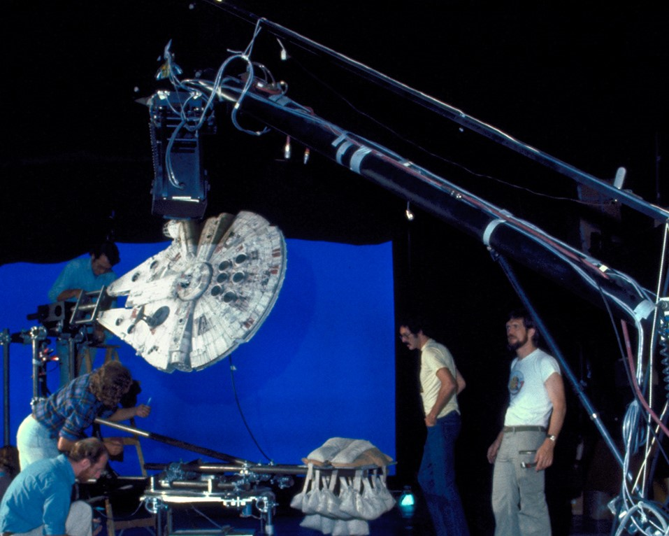
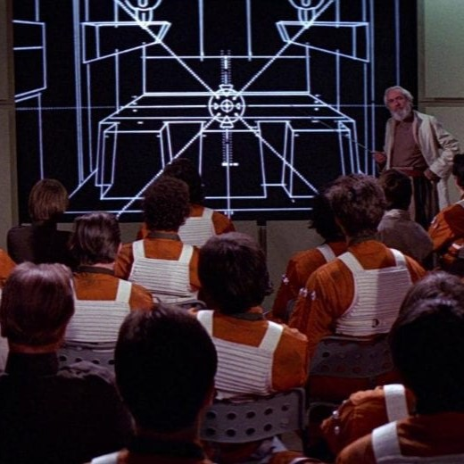

Introduction
In 1977, George Lucas released the first Star Wars film, raising the bar for visual effects and sound in movies. Star Wars broke several box office records and won eight Academy Awards, in addition to developing a devoted fanbase, whose imagination was captured by the revolutionary capabilities of sci-fi storytelling (“George Lucas: Kennedy center”).
George Lucas's Vision
Before Star Wars: Episode IV – A New Hope, visual effects used in sci-fi movies were primitive, hindering the types of stories they were able to tell. For example, in Star Trek, space battles were often represented by shaking the camera and showing the interior shots of the ship with crew members falling over. George Lucas's vision for Star Wars space battles included fast-paced dogfighting where you can see the ships moving around each other through space.
Dykstraflex
To capture this type of space combat, Lucas and ILM hired John Dykstra, a special effects designer, who had experience working with a new type of camera. This camera, known as the Dykstraflex, was developed by Dykstra and a team of ILM engineers. It was controlled by a computer and could move along seven different axes in a set path, allowing for greater freedom of movement and fluidity. The precise, computer-controlled path that the camera followed could be replicated exactly for getting multiple takes of a scene. The capabilities of the Dykstraflex camera played a major role in creating an immersive, realistic, and energetic feel to the film's space battles. In addition, the Dykstraflex marks a major milestone for ILM, being their first major technological innovation. (Jensen, 2022) (Giles, 2017).
Animation & CGI
While computer generated imagery was already present in filmmaking at the time of the first Star Wars, it wasn't very advanced. In the first film, however, ILM created never-seen-before 3D wireframe animations to display the rebel training program, instructing the recruits on how to destroy the Death Star. While wireframe animation doesn't look like much to modern audiences, at the time, it had never been used to such an extent as it was in the first Star Wars movie. Wireframe animation shows 3D models where the edges of the polygons that make up the shapes are the only elements visible, creating a web of interconnected lines. Since the first film though, ILM's work on computer generated imagery has only increased in quality, rapidly developing over the course of the 80s, and setting the gold standard for VFX (Giles, 2017).
Miniatures & Models
For the original trilogy, Lucas and ILM created detailed miniatures, models, and puppets to achieve a sense of realistic movement when implementing stop-motion animation. The technique they developed was called Go Motion, which used puppets built around a rod structure, controlled by a computer. This allowed the puppets to move more naturally, which contrasts to the rough and choppy stop-motion animation used in films prior. Yoda is an example of one of these puppets and the battle of Hoth was created mostly using miniatures of AT-ATs, Tauntauns, and starfighters on a miniature scale snowy landscape (Englehardt, 2022) (Giles, 2017).